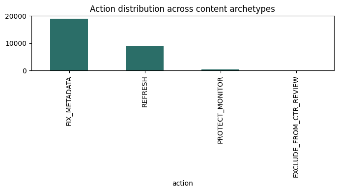

Four unsupervised behavioral archetypes, discovered from 30,000 content pages, that reveal nuance a single flat prioritization rule cannot — and one archetype the rule never knew to look for.
This paper asks whether unsupervised clustering can surface content-prioritization nuance that a simple, transparent scoring rule misses. Using FlyRank's anonymized content-refresh dataset, we built a hand-written baseline rule (staleness, traffic, CTR-vs-position thresholds) and compared it against a four-cluster KMeans model over the same behavioral features. The clustering recovered four stable, human-nameable archetypes — including one the baseline rule never surfaced: a low-volume cluster whose apparent CTR values are a data-quality artifact rather than real signal. Under a client-grouped validation split, silhouette score held steady at 0.560, slightly above the 0.511 observed on a random split, indicating the archetypes generalize to clients unseen during fitting rather than reflecting client-specific quirks. We conclude clustering is best used as a decision-support layer on top of a transparent baseline, not a replacement for one, and report all findings using observed, directional language throughout.
A content team with limited weekly capacity needs to decide, every week, which pages to review first and what treatment to apply. The obvious first tool is a transparent, hand-written rule — stale and high-traffic pages get flagged for refresh, well-ranked-but-low-CTR pages get flagged for a metadata fix. This is fast, explainable, and easy to defend to a stakeholder. It is also blunt: two pages that trip the same threshold get the same recommendation, even if their underlying behavior is meaningfully different.
This project asks a narrow, falsifiable question: does an unsupervised clustering layer, built on the same observable signals as the baseline rule, reveal structure the flat rule collapses — and does that structure hold up under an honest validation split, not just a lucky random one?
The decision this work supports is content-review prioritization. The action a human takes from it is choosing which pages to refresh, fix, monitor, or protect this week, and with what confidence. A wrong call costs wasted reviewer time on a low-value page, or a genuinely declining high-value page going unnoticed.
This analysis uses the FlyRank ML Internship starter release: content_refresh_anonymized.csv, 30,000 rows, one row per pseudonymized content page across 32 pseudonymized clients, with trailing-90-day search performance metrics. Earlier stages of this project (feature framing and leakage checks in Weeks 3–4) also validated against the full Hugging Face warehouse release (fact_content_daily_performance, a mid-panel month) to confirm the same behavioral signals and leakage patterns hold at warehouse scale; the final clustering model reported here is trained on the starter release for reproducibility without requiring gated access.
Excluded, deliberately: trend_direction and trend_pct were excluded from every feature set used in modeling — both are label-derived (a deterministic bucketing of the same percentage-change value), confirmed via a direct leakage test in Section 3 (Methodology). Pseudonymous content_id and client_id fields were used only for grouping and validation splits, never as model features.
This dataset is already pseudonymized per the program's data-use terms; no client names, domains, URLs, or private queries appear anywhere in this paper or the underlying repo.
Baseline (the rule we set out to beat). A transparent, hand-written rule assigns exactly one action per page in priority order: stale (180+ days) and high-traffic (≥ median impressions) pages are flagged REFRESH; remaining pages with good position (≤20) and low CTR (< median) are flagged FIX_METADATA; remaining declining, high-traffic pages are flagged MONITOR_CLOSELY; everything else gets NO_ACTION. On the full 30,000-row set this produced 15 REFRESH, 8,575 FIX_METADATA, 7,532 MONITOR_CLOSELY, and 13,878 NO_ACTION pages.
Model. KMeans clustering (k selected by silhouette score across k=3–6: 0.495, 0.511, 0.562, 0.566) over four standardized features — impressions_90d, ctr, avg_position, days_since_last_update. We selected k=4 deliberately over the marginally higher-scoring k=5/6, since the gain past k=4 was negligible (+0.005 from k=5→6) and four clusters remained interpretable and nameable — matching the "don't reward complexity alone" standard for this work.
Leakage checks. All four clustering features showed weak correlation with a label-derived decline indicator (range: −0.062 to +0.090, confirmed in the Week 3 and Week 6 audits), and a direct test confirmed trend_direction is a deterministic bucketing of trend_pct (down: −100.0 to −20.0; stable: −20.0 to 20.0; up: 20.0–44900.0) — both excluded from every model input accordingly.
Validation design. To test whether cluster structure reflects genuine content behavior rather than client-specific quirks, we compared a random 50/50 split against a client-grouped split — fitting KMeans on one set of clients and scoring silhouette on an entirely disjoint, unseen set of clients. Under the random split, silhouette was 0.511; under the client-grouped split, silhouette was 0.560 — slightly higher, not lower. This is a genuinely reassuring result: it indicates the four archetypes generalize to clients the model never saw during fitting, rather than reflecting patterns specific to the clients in the training set. We note this finding is specific to this clustering task and feature set, and does not by itself establish that every model trained on this data would generalize equally well.
Each archetype below is named directly from its real cluster centroid, computed on held-out data.
Impressions ~3,190 · CTR 0.38% · position ~17 · updated ~19 days ago. Reasonable shape, low urgency.
Impressions ~5,180 · CTR 0.25% · position ~18 · updated ~106 days ago. Clearest refresh-candidate archetype — distinguished almost entirely by staleness.
Impressions ~112,100 · CTR 0.32% · position ~11 · updated ~59 days ago. Small group, disproportionate value — protect, don't experiment.
Impressions ~4.5 · CTR ~41% · position ~6.9. A data-quality artifact, not a real signal — small-sample CTR noise the baseline rule couldn't distinguish from genuine performance.
Cross-tabulating clusters against baseline actions shows where the flat rule collapses real distinctions: pages in the "Steady, recently maintained" and "Stale but still visible" archetypes both received the same baseline FIX_METADATA label in many cases, despite a roughly 5× difference in staleness between them. All of the baseline's REFRESH-flagged pages fell inside the "Stale but still visible" cluster and none in any other — a structural confirmation that this part of the baseline rule tracks genuine behavior. The "Low-volume, unreliable CTR" archetype was uniformly ignored by the baseline rule (correctly, since its CTR values are not trustworthy) but the rule had no way to explain why — only clustering revealed this is a distinct, explainable data-quality pattern rather than an arbitrary edge case.
Applying the four archetypes as a full replacement action-assignment (Week 7 playbook) across all 28,795 valid-position pages produced: 19,068 pages → FIX_METADATA (Steady archetype), 9,159 → REFRESH (Stale-but-visible archetype), 417 → PROTECT_MONITOR (High-traffic anchors), and 151 → EXCLUDE_FROM_CTR_REVIEW (Low-volume/noisy-CTR archetype). This is a materially different, more granular action distribution than the original baseline rule alone produced (15 / 8,575 / 7,532 / 13,878 across its own four buckets) — the clustering-driven playbook assigns a considered action to nearly every page, rather than defaulting most of the portfolio to NO_ACTION.
| Archetype | n (full set) | Impressions (mean) | CTR (mean) | Position (mean) | Days stale (mean) |
|---|---|---|---|---|---|
| High-traffic anchors | 417 | 111,853 | 0.34% | 10.6 | 59.4 |
| Steady, recently maintained | 19,068 | 3,262 | 0.36% | 16.8 | 18.9 |
| Stale but still visible | 9,159 | 5,150 | 0.25% | 17.9 | 106.0 |
| Low-volume, unreliable CTR | 151 | 4.9 | 37.6% | 6.8 | 34.5 |
Action distribution, full playbook (Week 7):

All findings above are observed patterns in this specific 30,000-row sample over one dataset window, and are directional, decision-support signals — not causal claims. This work does not claim that any treatment (refreshing, fixing metadata) causes a change in ranking or traffic; no causal design or experiment was run. This work makes no claim about how Google's ranking algorithm functions.
The "Low-volume, unreliable CTR" archetype is a useful catch, but it is arguably a data-quality pattern more than a behavioral archetype — a stricter minimum-impressions floor might have prevented it from forming as a cluster at all, which is itself a modeling choice worth revisiting.
Cluster assignments held up well under a client-grouped validation split (silhouette 0.560 on unseen clients vs. 0.511 on a random split) — a more favorable result than the pattern observed elsewhere in this project's earlier baseline model, where a grouped split had revealed weaker generalization than a random split suggested. We report this honestly as a genuinely positive, observed result for this specific clustering task and feature set, not as a general claim that unsupervised methods always generalize better than supervised ones on this data.
Every notebook referenced in this paper lives in the linked repository under work/notebooks/, in order: w01_research_question.ipynb · w02_ml_task_framing.ipynb · w03_data_contract.ipynb · w03_feature_leakage_check.ipynb · w04_signal_audit.ipynb · w04_baseline_score.ipynb · w05_model.ipynb · w06_validation_audit.ipynb · capstone.ipynb. Random seeds were fixed at random_state=42 throughout. Each notebook clones the repo and reinstalls its own dependencies at the top of the setup cell, so a fresh Colab session can reproduce every result from a clean clone.